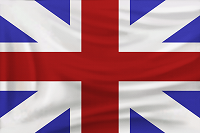
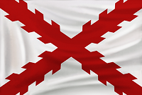

Nemzetek

Angol

A dicsőséges Anglia kereskedelmi érdekből kutatta a késõbbi gyarmatait. Amerikával is e
célja volt, ezért a Mayflower-rel érkezett telepesek és kicsiny
kis katonaság már hatalmas városokat és kisebb erõdítményeket húzott fel. Mindent a királynőért
és a dicsőséges birodalomért. Azonban a kialakult személyi szabadság késõbb veszélyeztette a mini államokat.
Gazdasági téren viszont az angolok az aduászok. A telepesek kifinomult és gyors termelése a mielőbbi utánpótlás
segítője. A telepesek azonban védelmükre fegyvert kaptak és pár lelkes ember helyőrséget alapított. Gyalogosként
a muskétások szereztek hírnevet, míg a lovasság itt is, mint a Közép-Európában, a huszárság lett. Fővárosuk technológiája
a legkiemelkedőbb és hadihajó gyártásban is leveri minden társát a kontinensen. A Home City itt
London, mely az anyaország fővárosáról lett elnevezve. Körös-körül majorságokkal van teleépítve, ahonnan termelhetőek
lesznek a telepesek.
Legjobb tulajdonság
Erős egységük továbbá az angoloknak a longbowman, vagyis a nagy nyíllal rendelkezõ íjászok és a Rocket nevezetû lövészek. Mégis az aduászok a muskétások, akik formációba rendezõdve folyamatosan változtatják soraikat. Viszont erős sortüzük ledönti a legerősebb lovas támadást is. Viszont elég lassan mozognak és töltenek újra, és az ágyuk ellen védtelenek.
Spanyol

A spanyolok megszimatolták az újvilágban lévő arany mennyiséget. Barcelonai conquistador-ok
hatalmas lépésre szánták el magukat. A királynő nevében hajókat szereltek fel, és legénységet toborozva elindultak
Kolumbusz Kristóf útvonalán.
A spanyolok a játék igazi aduászai. Páncélozott gyalogosaik és calvalry nevezetû lovasaik
ellen igen nehéz a győzelmet kivívni nyílt terepen. A fővárosuk a játék egyik legerősebb központja, innen kiindulva
gyárthatjuk az erős lándzsásokat és formációkba rendezhetjük könyörtelen lovasainkat. Az arany megszállottjai elõnyösebb
feltétellel indul, mint a többi nép.
Szépséges fővárosuk Sevilla, ami nem a dzsungel közepére épült, hanem közel a partokhoz.
A királynőnek felajánlott város méltán viseli az újvilág fővárosa címet. Kiváló kereskedési lehetõséget nyújt és
a hajók is gyorsabban szállítanak errefelé, mint a másik nációéké. Extra bonuszként kapunk új egységeket, mint például
a Redolero-t, lándzsást és harci kutyát.
Legjobb tulajdonság
Mégis pikásaink lesznek a legcélravezetõbb egységünk. A mocsaras, lápos vidékeken könnyebben mozog, mint lovas társaik és formációkba gyűlve szinte áttörhetetlen falat tudnak létrehozni. Olcsó és bonuszként könnyen bánik el az épületekkel és a lovasokkal. Hátrányuk a lassúság, és a korai időkben elég szervezetlenek.